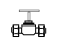
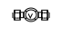
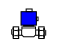
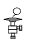

⬅ La carte du réseau · tronc commun · pour le froid et la clim en cours de relecture
Un tube qui monte, tourne, redescend : sur un plan, on ne le voit jamais en entier. Le schéma isométrique le montre en une seule vue, avec ses trois dimensions. Cette gare dure environ 2 heures. À la fin, vous saurez :
Prérequis : les gares 2 (les vues), 7 (la cotation) et 8 (le croquis coté). Un tronçon est un morceau de tube entre deux changements de direction.
Sur un plan (vue de dessus), la hauteur disparaît. Sur une coupe, la largeur disparaît. L'isométrie garde les trois dimensions sur une seule feuille : les lignes parallèles restent parallèles, il n'y a pas de point de fuite.
| Vous voulez… | L'isométrie vous donne… |
|---|---|
| commander les tubes | la longueur de chaque tronçon, donc le total |
| vérifier un tracé avant de couper | le chemin du tube dans les trois directions |
| expliquer au poseur où passe le tube | une image que l'on comprend sans plan ni coupe |
| relever une installation existante | un croquis exploitable (gare 12) |
Une isométrie de tuyauterie est le plus souvent sans échelle : on ne mesure pas le dessin, on lit les cotes.
Toute l'isométrie se construit sur trois directions. Trois règles :
| Axe (sa lettre) | Sur la feuille | Pour le tube |
|---|---|---|
| vertical (Z) | un trait vertical | il monte ou il descend |
| de droite (X) | un trait à 30° qui monte vers la droite | le tube reste horizontal : vers la droite (le trait monte sur la feuille) ou vers la gauche (le trait descend) |
| de gauche (Y) | un trait à 30° qui monte vers la gauche | le tube reste horizontal : vers la gauche (le trait monte sur la feuille) ou vers la droite (le trait descend) |
Dans ce cours, tous les tubes sont horizontaux ou verticaux : seul l'axe vertical fait monter ou descendre le tube. Sur les deux autres axes, le trait monte ou descend sur la feuille, pas dans la réalité. Les lettres X, Y, Z servent à nommer les axes sur la grille de l'exercice. La pente d'un tube se note à part (écran 8).
Exemple résolu. Le tube part du point A (la sortie du groupe) et arrive au point F. Les longueurs sont des valeurs d'école.
| Tronçon | Axe | Sens | Longueur |
|---|---|---|---|
| A → B | de droite | vers la droite (le trait monte) | 2,00 m |
| B → C | vertical | vers le haut | 1,50 m |
| C → D | de gauche | vers la droite (le trait descend) | 2,50 m |
| D → E | de droite | vers la droite (le trait monte) | 1,00 m |
| E → F | vertical | vers le bas | 1,00 m |
Devant une isométrie, vous posez quatre questions, dans cet ordre :
| Question | Comment répondre |
|---|---|
| 1. Par où passe le tube ? | suivez-le de A à F, tronçon par tronçon, en notant l'axe et le sens |
| 2. Combien de coudes ? | un coude par point intermédiaire : n tronçons font n − 1 coudes |
| 3. Quelle longueur ? | additionnez les cotes de tous les tronçons |
| 4. Quelle hauteur gagnée ? | les montées moins les descentes (seuls les tronçons verticaux comptent) |
Pour le tube de l'exemple (écran 4) :
Axe de droite : 3,00 m · axe de gauche : 2,50 m · axe vertical : 2,50 m. Longueur totale du tube : 8,00 m · coudes : 4 · hauteur gagnée entre A et F : 0,50 m.
Piège : la hauteur gagnée n'est pas la somme des tronçons verticaux. Ici, le tube monte de 1,50 m, puis descend de 1,00 m : il gagne 0,50 m.
Comme en gare 7 : une cote écrite fait foi. On ne mesure pas le dessin pour la retrouver.
Entre le groupe et l'évaporateur, la ligne liquide porte des appareils. Chacun a son symbole :
| Symbole | Appareil | À quoi il sert |
|---|---|---|
 | Robinet d'arrêt | isoler une partie de la ligne |
| Filtre déshydrateur | retenir l'humidité et les impuretés | |
 | Voyant liquide | regarder le fluide qui passe |
 | Électrovanne | laisser passer ou couper le liquide, sur commande |
 | Détendeur | faire baisser la pression du liquide à l'entrée de l'évaporateur |
Ordre habituel dans le sens du fluide, du groupe vers l'évaporateur : robinet d'arrêt, filtre déshydrateur, voyant, électrovanne, détendeur. Le schéma de l'installation fait foi.
Pictogrammes : collection QElectroTech (CC BY 3.0), adaptés par inerWeb — F. Henninot.
La valeur de la pente vient du dossier ou de la notice : on ne l'invente pas.
Répondez à tout, votre score s'affiche en bas.
Trois axes, un tube tracé tronçon par tronçon, des cotes lues, des symboles reconnus, une pente calculée : vous savez lire et tracer une isométrie.
📄 Télécharger l'exercice (PDF)
Pour l'enseignant : corrigé dans corrige.pdf (tracé de référence sur la grille, réponses). L'exercice se fait au crayon, sur papier A4 : lire une isométrie cotée, puis en tracer une sur la grille de points.
Pictogrammes : collection QElectroTech (CC BY 3.0), adaptés par inerWeb — F. Henninot.